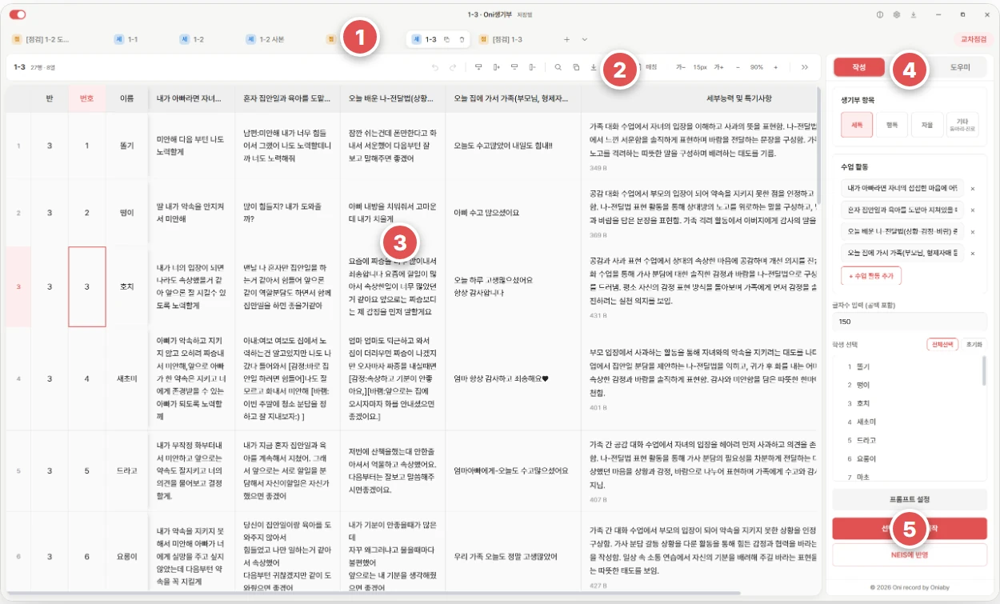
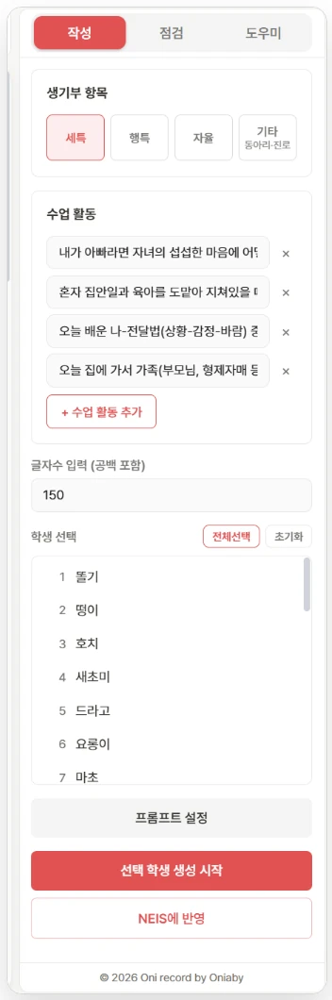
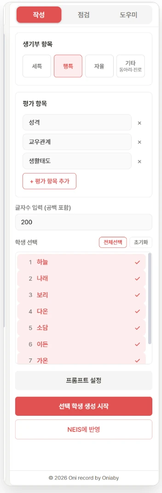
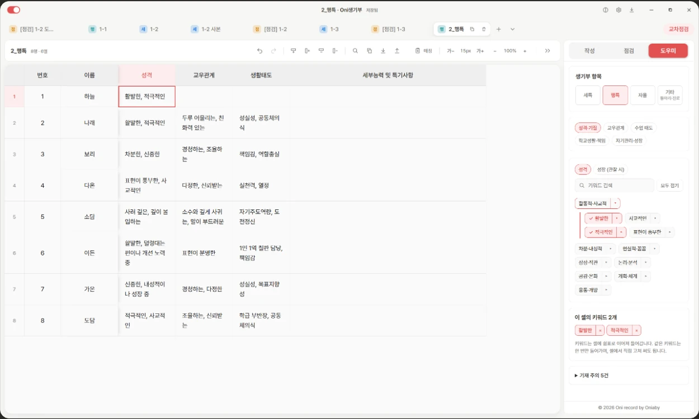
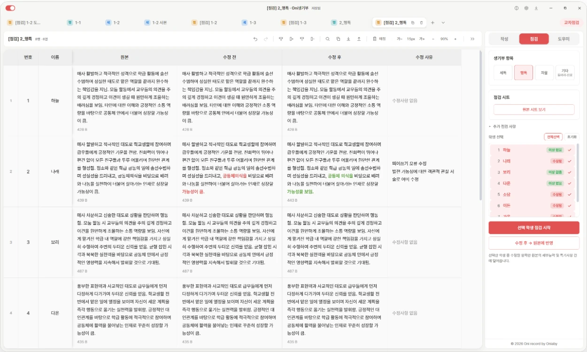
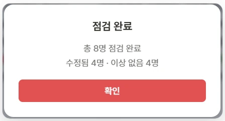

Desktop app for writing and checking student records
Write and check student records, in one table, with AI
Type as you would in Google Sheets, pick your material from keyword
chips, let AI write the draft, check it against the official
writing guidelines, then apply it to NEIS, Korea’s national school
information system.
1 WriteAI drafts for subject comments, behavior notes and activities
2 AssistKeyword chips supply the material for each sentence
3 CheckBefore and after, compared against the writing guidelines
4 ApplyBatch entry into NEIS
Before you start
AI features need a Gemini API key
For smooth writing and checking, a paid-tier API key is needed
Writing and checking call the AI once per student. Running a whole class sends the calls one after another.
On the free tier, request limits can make a batch stop or slow down partway through.
With a paid-tier key that has billing connected, a whole class can run without interruption.
Without an API key
Editing the table, entering Assist chips, and importing or exporting CSV and Excel all work. AI writing and checking do not.
Paid-tier API key (recommended)
Write and check a whole class at once. Usage is billed to the teacher’s own Google account.
The key is issued in Google AI Studio and entered in the app’s settings. Pricing and limits follow Google’s policy and can change, so check them when you get the key.
Flow
The basic workflow
One sheet carries the work from preparation to NEIS. No separate Excel conversion is needed.
1Prepare a sheetRead the roster from NEIS, or bring in CSV, Excel or Google Sheets
2WriteEnter keyword chips, then generate an AI draft
3CheckCheck against the guidelines, then apply fixes to the original
4Apply to NEISBatch entry, save, then confirm the match
Type or paste straight into the table. Every long-text cell shows its NEIS byte count (a Korean character is 3 bytes, a line break 2).
Move between the 작성 (Write), 점검 (Check) and 도우미 (Assist) tabs in the right panel and stay on one screen.
Your work is saved on your own PC, and new versions arrive through the built-in updater.
Screen
How the screen is laid out

A moral education subject-comment sheet for class 1-3, as it runs in the app.
1
Sheet tabsOne tab per class and subject
2
ToolbarUndo, row and column editing, find, import and export, text size and zoom
3
Editing tableArrow-key movement, copy and paste, byte count in each cell
4
Write · Check · AssistChoose 세특, 행특, 자율 or 기타 (club and career)
5
Start generatingSelect students and draft them in one run; the NEIS apply button sits just below
Write
Writing, by record type
Choose what you are writing, and the input panel and the AI’s writing rules change to fit that type.
세특 · Subject comments
교과 세부능력 및 특기사항

1
Add lesson activitiesEach activity name you enter becomes a column in the table.
2
Enter notes for each studentThe draft is based only on what the student actually did.
3
Set the length, select students, startThe draft is written to the character count you set, spaces included.
AI writing rules. The subject teacher’s point of view, in one connected paragraph. Wording that implies one lesson continued from another is avoided, and an activity left empty is never invented.
행특 · Behavior notes
행동특성 및 종합의견

1
Set the evaluation itemsFor example personality, peer relations and attitude to school life.
2
Enter keywords for each itemPick them from Assist chips or type them yourself.
3
Set the length, select students, startThe keywords you entered are worked into the sentences.
AI writing rules. The homeroom teacher’s point of view, centered on the student’s current positive change. A weakness is written together with the effort to improve, and the note closes with one sentence on the student’s potential.
자율활동 · Autonomous activities
자율활동 특기사항
1
Save each activity’s date and nameSaved activities appear as a pick list in the table’s activity cells.
2
Set the number of activity slots and enter each student’s notesAdd as many slots as you need.
3
Set the length, select students, startThe paragraph is written with the date in (YYYY.MM.DD.) form after each activity name.
AI writing rules. One paragraph that connects what the activity meant with how the student grew. Activity names are written without quotation marks, and the opening phrases are varied from student to student.
Club and career activity sheets have their own writing and checking rules, under 기타. They cannot be applied to NEIS yet, so the generated text is copied by hand.
Assist
Record assistant: just press the chips
There is no need to start each sentence from a blank cell. Press keyword chips organized by subject and item to put them in the cell, and the AI writes from those keywords.

Select an empty cell and press chips. They are entered in the cell joined by commas, as in “활발한, 적극적인”.
1The chips change with the area
Subject comments are grouped by subject. Behavior notes are grouped by personality, peer relations, class attitude, school life and self-management.
2Open a chip to go deeper
Opening a group such as “active and sociable” shows more specific keywords like “lively” and “outgoing”. Either level can be chosen.
3Straight into the cell
Chosen keywords are listed under “keywords in this cell”. Remove one with ×, or edit the cell by hand. The same keyword is entered only once.
4Search, collapse, cautions
Keyword search, collapse all, and a list of writing cautions for each area come with the panel.
Korean
Mathematics
English, foreign languages, classical Chinese
Social studies, history, ethics
Science
Physical education
Arts
Technology, home economics, informatics
Career and liberal arts
Other and common
Assist for subject comments is divided into these ten subject groups. Behavior notes, autonomous activities, clubs and career each have their own chips. The keywords you choose are what the AI uses to interpret and write each sentence. The keyword lists are a first draft and have not yet been reviewed in schools.
Check
AI checks against the writing guidelines
The original is left as it is. A separate check sheet shows what changed and why, at a glance.
1Make a check sheetColumns for original, before, after and reason are created
2Select students and checkEach student is marked fixed or unchanged
3Apply to the originalOnly fixed items are written back to the original cell

A check result. Changed parts are marked red before and green after, and the reason is recorded beside them.

When checking ends, the app reports how many were fixed and how many were unchanged.
Review the reason for each student and choose what to apply to the original.
If nothing needs fixing, the original is kept and marked 수정사항 없음 (no changes).
A result that was shortened too much keeps the original and raises a warning.
Write your own criteria under “additional check items” and they are checked as well.
What is checked, following the 2026 writing guidelines
Sentence endingsNoun-form endings, with varied endings
Particles and subjectNo “~에서는”, required particles in place
Quotation marksSingle quotes only for book and project titles
DatesOne format: (YYYY.MM.DD.)
Symbols and layoutDecorative symbols, bullet lists and double spaces cleaned up
Not to be recordedUniversity and institution names, overseas results, competition content
VocabularyColloquial and abbreviated words made standard
Content keptThe student’s own content is neither deleted nor invented
The teacher makes the final decision on anything the AI checks. Read the reasons before applying.
NEIS
Apply to NEIS in one go
No copying and pasting student by student. The app matches its text to NEIS by class, number and name and enters it in a batch.
1ConnectLink the Chrome extension to the open NEIS tab
2Set the targetSchool year, grade and class, and the type of record
3Match and enterClass, number and name, entered in one batch
4Save and confirmAfter saving, the result is compared with the app’s text
Subject comments, autonomous activities and behavior notes are supported. Club and career records are not yet.
An existing record that differs from the selected text is replaced. An empty text is not entered.
The student roster can also be read from NEIS into a new sheet.
If NEIS screens change, some steps may behave differently. Always check the result before and after applying. The extension currently supports cbe.neis.go.kr, with more regions to follow after verification.
Checklist
Check these before you use it
It is an installed Windows program, with automatic updates.
AI writing and checking need your own Google Gemini API key. A paid-tier key is recommended for smooth use.
Applying to NEIS needs the Chrome extension installed and connected.
Text written by AI must be reviewed and edited by the teacher before it is used.
CSV, Excel and Google Sheets content can be imported, and check results can be exported to Excel.
What you enter for AI writing and checking is sent to Google’s servers. Handle personal information such as students’ real names carefully, following your school’s guidance.
Data · reviewed 2026-10-09
What stays on the PC and what leaves it
Student records are sensitive, so the app is explicit about where they go.
Stored locally
Writing sheets, student cell contents, generated text, preferences and prompt templates are saved in store.json in the Windows user profile. The separate check window uses store-check.json. The reviewed app source does not sync these sheets to an Oni account cloud. These work files are not encrypted by the app.
The teacher’s own AI key
Drafting and checking use Google Gemini with the teacher’s own API key. The desktop app encrypts the saved key with Electron safeStorage (Windows DPAPI) when available. The current implementation falls back to plaintext key storage when OS encryption is unavailable. Requests go directly from the desktop app to Google’s API.
What is sent to the AI
Generation and checking send task prompts and the selected work content to Google Gemini. Local file storage does not mean that AI processing stays offline. Review the content before requesting an AI operation.
NEIS only on request
Nothing is entered in NEIS until the teacher opens the apply dialog and confirms. The extension works only on the NEIS tab already open in the browser.
This term, spend less time on student records
Oni Record · Windows desktop app · Beta v0.1.1-beta.9